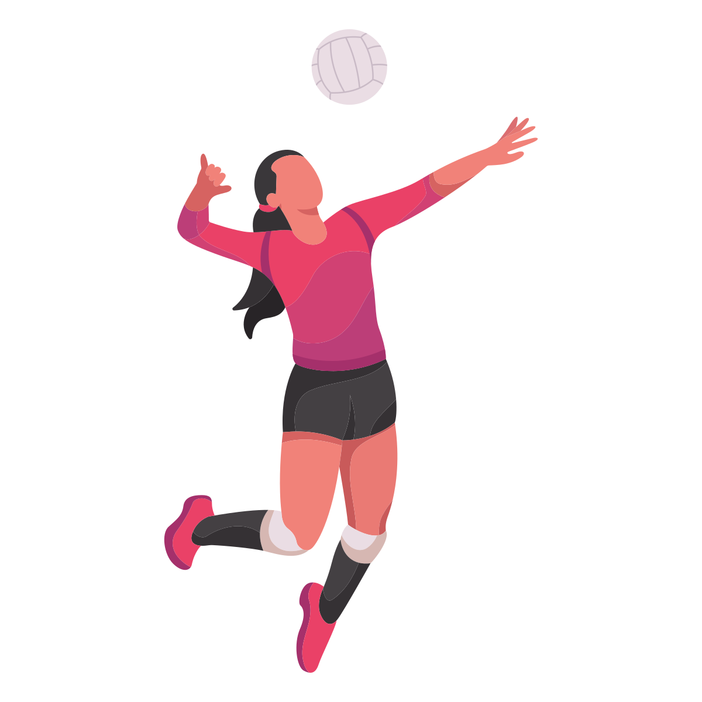
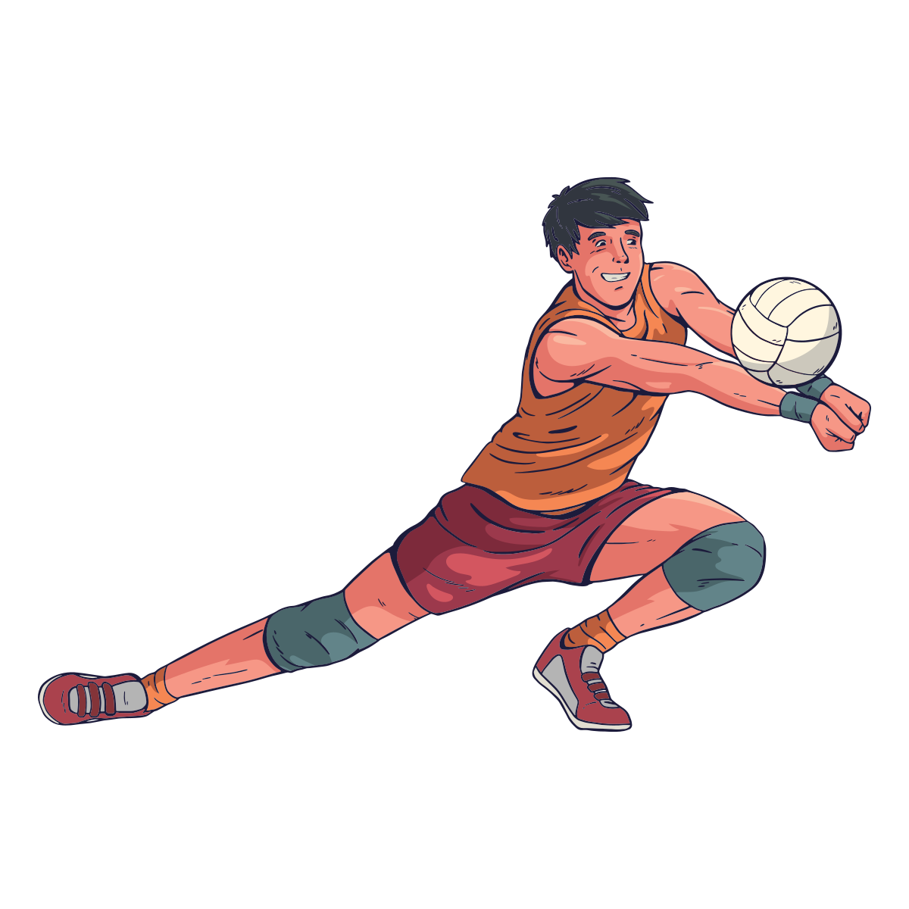
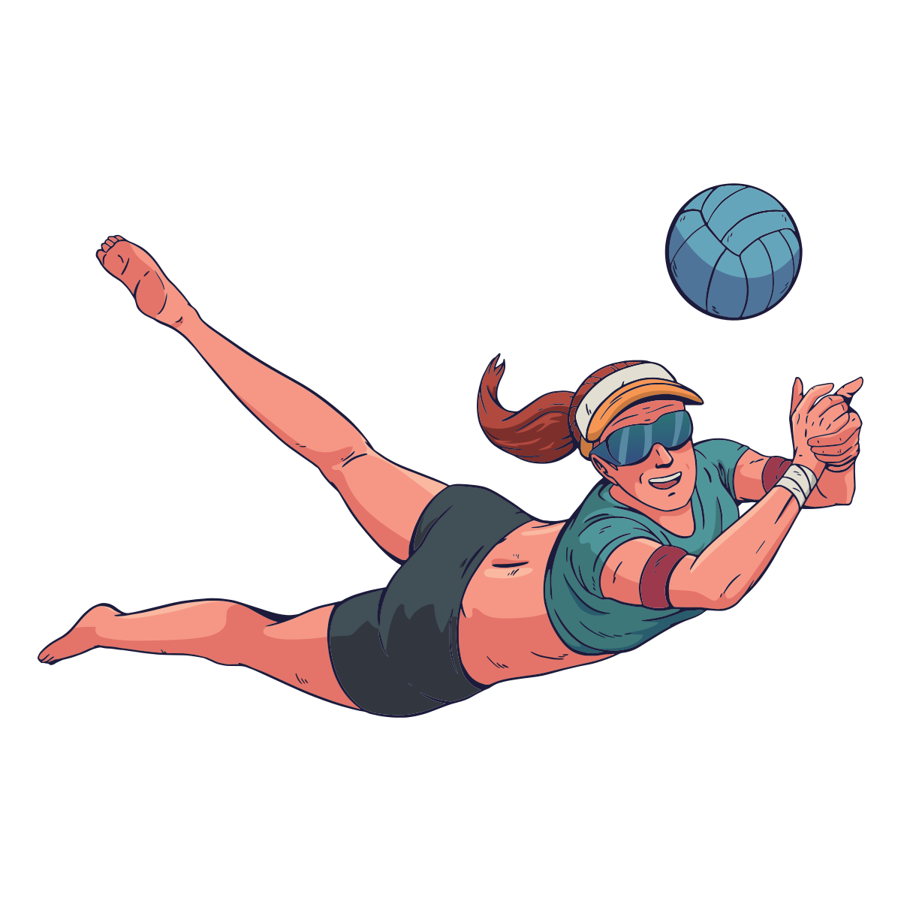

Võrkpalliga saab Tartus alustada mitme klubi juures. Siin on mõned kohad, kust võiks otsida:
Harrastajate gruppide kohta küsi otse klubidelt. Treeningute ajad ja hinnad: vaata klubide kodulehtedelt.

Varustus alustuseks:
Esimene samm Eestis:

Alustamiseks on sobivad lihtsamad harjutused:
